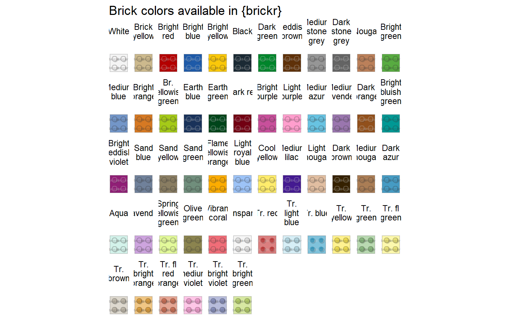

Generates a plot of available brick colors. These names must be used exactly when creating custom name lists. There are 41 solid brick color names and 13 transparent colors. Transparent colors are not used in mosaics.
build_colors(.names_only = FALSE, include_transparent = TRUE)
| .names_only | Return an array of the 41 solid brick color names and 13 transparent colors. Does not plot. |
|---|---|
| include_transparent | Include transparent colors in the plot output. |
An array or ggplot of brick colors & ID numbers.
Use .names_only = TRUE to get a list of color names.
Other Resources:
build_instructions(),
build_pieces_table(),
build_pieces()
#Generate plot of colors build_colors(include_transparent = FALSE)#>#Print list of colors build_colors(TRUE)#> [1] "White" "Brick yellow" "Bright red" #> [4] "Bright blue" "Bright yellow" "Black" #> [7] "Dark green" "Reddish brown" "Medium stone grey" #> [10] "Dark stone grey" "Nougat" "Bright green" #> [13] "Medium blue" "Bright orange" "Br. yellowish green" #> [16] "Earth blue" "Earth green" "Dark red" #> [19] "Bright purple" "Light purple" "Medium azur" #> [22] "Medium lavender" "Dark orange" "Bright bluish green" #> [25] "Bright reddish violet" "Sand blue" "Sand yellow" #> [28] "Sand green" "Flame yellowish orange" "Light royal blue" #> [31] "Cool yellow" "Medium lilac" "Light nougat" #> [34] "Dark brown" "Medium nougat" "Dark azur" #> [37] "Aqua" "Lavender" "Spring yellowish green" #> [40] "Olive green" "Vibrant coral" "Transparent" #> [43] "Tr. red" "Tr. light blue" "Tr. blue" #> [46] "Tr. yellow" "Tr. green" "Tr. fl green" #> [49] "Tr. brown" "Tr. bright orange" "Tr. fl red orange" #> [52] "Tr. medium violet" "Tr. bright violet" "Tr. bright green"